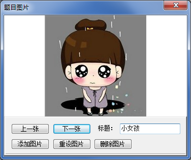
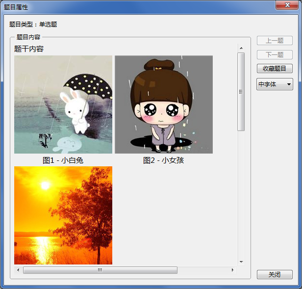

题目图片
题目图片
题目中题干、解析中的图片将通过以下窗口进行管理。

点击“添加图片”可新增一张图片，支持添加bmp、jpeg、png格式图片，像素值不超过640×640，文件大小不限；点击“重设图片”可将当前图片修改为其他图片；点击“删除图片”可将当前显示图片删除；当添加了多张图片时，可利用“上一张”“下一张”翻动查看。
您可以为每张图片设置一个标题，最多支持32个字符，标题设置后立即生效。
 | 在显示带有图片的题目时，图片将在题干之后依次显示，并显示图片序号及标题。
 |
|---|
GX Software 2020-2021
V2.0